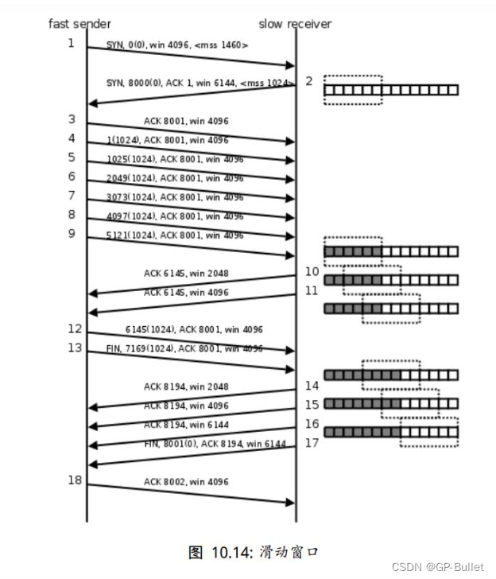

TCP流量控制_(滑动窗口）
一、TCP vs. UDP
TCP可提供可靠的数据传输而UDP无法做到，那我们为什么还用UDP？
·使用UDP传送单条消息的开销要比TCP小
·响应式通信，UDP的速度要比TCP快。
DNS是应用UDP的绝好例子。 但使用UDP又需要可靠性保证的应用程序必须自行实现可靠性保障功能。
如果需要更高级的流量控制和拥塞控制，最好直接用TCP。
下面我们粗浅的了解一下TCP的流量控制
二、滑动窗口（Sliding Window）
请仔细阅读下图

（上图在接收端用小方块表示1K数据，实心的小方块表示已接收到的数据，虚线框表示接收缓冲区，因此套在虚线框中的空心小方块表示窗口大小，从图中可以看出，随着应用程序提走数据，虚线框是向右滑动的，因此称为滑动窗口。 ）
1.发送端发起连接，声明最大段尺寸（每个包大小）是1460，初始序号是0，窗口大小是4K（即win），表示“我的接收缓冲区还有4K字节空闲，你发的数据不要超过4K”。接收端应答连接请求，声明最大段尺寸是1024，初始序号是8000，窗口大小是6K。发送端应答，三方握手结束。 2.发送端发出段4-9，每个段带1K的数据，发送端根据窗口大小知道接收端的缓冲区满了，因此停止发送数据。 3.接收端的应用程序提走2K数据（处理掉部分数据），接收缓冲区又有了2K空闲，接收端发出段10，在应答已收到6K数据的同时声明窗口大小为2K。 4.接收端的应用程序又提走2K数据，接收缓冲区有4K空闲，接收端发出段11，重新声明窗口大小为4K。 5.发送端发出段12-13，每个段带2K数据，段13同时还包含FIN位。 6.接收端应答接收到的2K数据（6145-8192），再加上FIN位占一个序号8193，因此应答序号是8194，连接处于半关闭状态，接收端同时声明窗口大小为2K。 7.接收端的应用程序提走2K数据，接收端重新声明窗口大小为4K。 8.接收端的应用程序提走剩下的2K数据，接收缓冲区全空，接收端重新声明窗口大小为6K。 9.接收端的应用程序在提走全部数据后，决定关闭连接，发出段17包含FIN位，发送端应答，连接完全关闭。 ———————————————— 版权声明：本文为CSDN博主「GP-Bullet」的原创文章，遵循CC 4.0 BY-SA版权协议，转载请附上原文出处链接及本声明。 原文链接：https://blog.csdn.net/weixin_61631200/article/details/125054167
end


评论